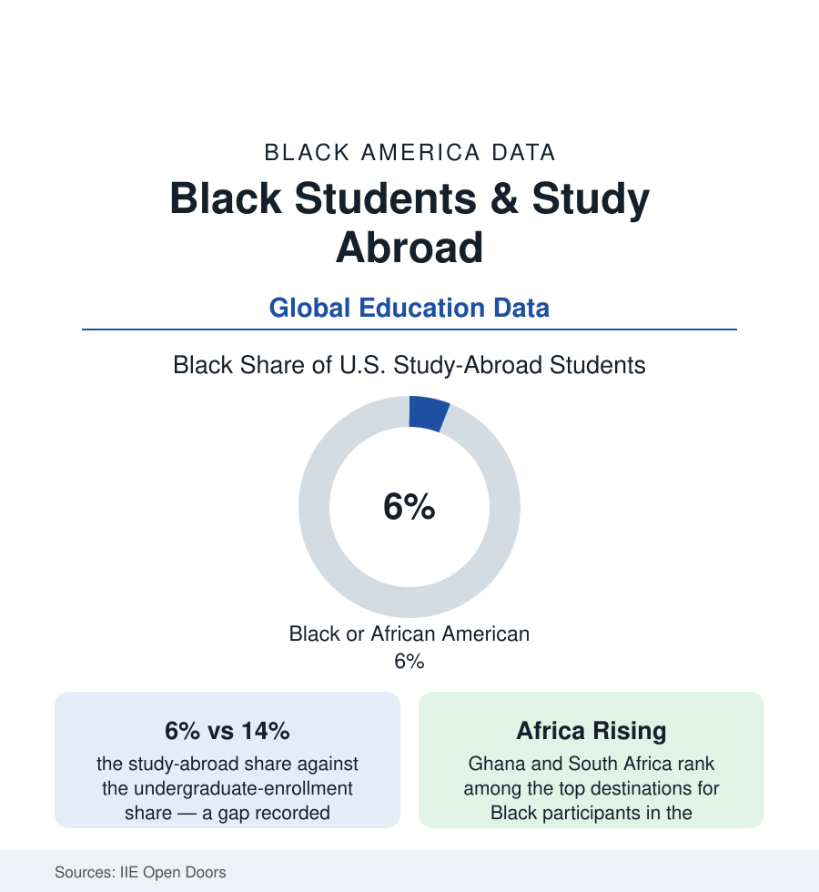

Black Education
Black Students and Study Abroad: Six Percent of the Passports to Campus
Black students are about 6% of American study-abroad participants — against 14% of undergraduates. The Open Doors data on the global classroom's gap, and the HBCU programs answering it.

The global classroom has a door, and the Institute of International Education's annual census has counted who walks through it for decades: Black students at about six percent of American study-abroad participants in the recent Open Doors data — against roughly fourteen percent of undergraduate enrollment. The gap is the education file's most portable one: it follows students past every domestic gate they cleared (admission, funding, credits) and reopens at the passport office. This article reads the abroad data: where Black students go when they go, what the counts say stops the rest, and the programs built specifically to move the number.
The Destination Map: A Different Itinerary
The destination data hold the file's most interesting divergence: the standard American itinerary (the United Kingdom, Italy, Spain, France holding the top ranks overall in Open Doors) reorders for Black participants — Ghana and South Africa ranking at or near the top for Black students across multiple years of the destination tables, with the Caribbean and Brazil prominent — the heritage itinerary, students choosing the diaspora map on purpose (the program catalogs' response measurable: the Ghana semester, the Afro-Brazilian studies term, the HBCU-led faculty trips built on exactly this demand). The program-type data add the second divergence: Black participants over-represented in short-term and faculty-led programs (the under-eight-week formats) against the semester standard — a distribution that is partly preference and partly the funding-and-credit arithmetic of the next section — and under-represented in the full-year immersions. The outcome research attaches its own asymmetry: the abroad dividend in the alumni surveys (the intercultural competence and career-signal findings) compounding the participation gap into a résumé gap, while the heritage-program participants' identity-and-belonging outcomes register in the qualitative literature as the abroad experience's distinct Black form — the return-to-Africa semester as a documented educational genre of its own.
The Gates: Money, Credits, and Information
The barrier research (the Fund for Education Abroad's and the institutes' participant surveys) prices the gap's components: cost first, but in a specific form — the abroad semester's sticker against the aid package's portability (the federal aid traveling, the institutional aid often not, the lost campus job and the unpaid-internship semester's opportunity cost in the family ledger — the PLUS file's households running the same arithmetic), the passport-and-gear threshold itself (the first-generation traveler's startup costs the surveys itemize); credits second (the STEM and sequenced majors' degree maps with no slack semester — the engineering and nursing curricula's abroad rates the lowest in the field-of-study data, the Black STEM student's double bind); and information third (the first-generation student's abroad knowledge arriving by advisor rather than by family — the study-abroad office's outreach data, the 'students like me don't do this' perception the participant demographics themselves perpetuate, and the representation loop it closes: six percent this year photographing next year's six). The scholarship layer's targeted instruments are named in the federal record: the Gilman Scholarship (the State Department's Pell-eligible abroad program — its recipient demographics, roughly half students of color in the program's reporting, the single largest counterweight in the data), the Fund for Education Abroad's dedicated funds, and the Boren and CLS critical-language awards' diversity cohorts.
The HBCU Model and the Institutional Push
The institutional responses with measurable footprints: the HBCU global programs (Spelman and Morehouse's longstanding abroad cultures — Spelman's participation rates among the sector's documented leaders, the going-global graduation expectations built into some HBCUs' curricula), the faculty-led short-term model as the sector's scaling answer (the cost compressed, the credits pre-mapped, the cohort traveling with its own professors — the format the destination data show Black students already choosing, institutionalized), the passport drives (the campuses partnering to put the document itself in students' hands — the State Department's passport-acceptance campus events, the first-generation traveler's first gate removed as a registration step), and the consortium programs pooling small colleges' abroad capacity. The sector context in the Open Doors institution tables: the national participation rate itself (roughly a tenth of undergraduates abroad before graduation in the pre-pandemic series, recovering in the recent counts) sets the gap's denominator — the Black six percent is a share of a minority experience, the abroad file's gap stacked on the enrichment gap the whole education section keeps measuring.
Reading the Abroad Data
Six percent of the passports, a heritage itinerary of their own design, and barriers itemized down to the passport fee: the abroad file is the education data's reminder that access fights do not end at the border of the campus — they re-open at every enrichment the degree quietly assumes. The Gilman numbers prove the gap moves when the money is aimed. The destination tables prove the students were never the reluctant part of the equation.
More in Black Education
Black Educational Attainment: High School Parity, the College Gap
About 89 percent of Black adults hold a high school diploma and one in four holds a bachelor's degree or higher — the attainment ladder, the college completion gap, and the generational trend.
Historically Black Colleges and Universities: Enrollment and Degrees
More than 100 HBCUs enroll roughly 290,000 students and award about one in six Black bachelor's degrees — an outsized share from a small sector. The federal education data.
Black College Enrollment: 2.4 Million Students
About 2.4 million Black students are enrolled in American colleges — nearly two-thirds of them women. The NCES enrollment data by sector, level, and trend.
Source: Institute of International Education, Open Doors Report; Fund for Education Abroad; U.S. Department of State Gilman Scholarship data; NAFSA.